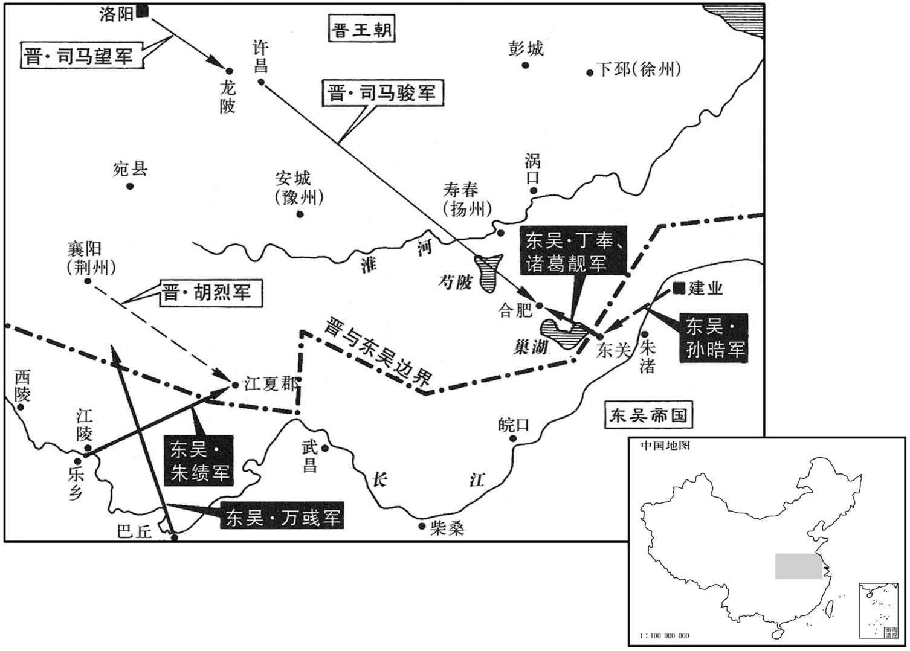
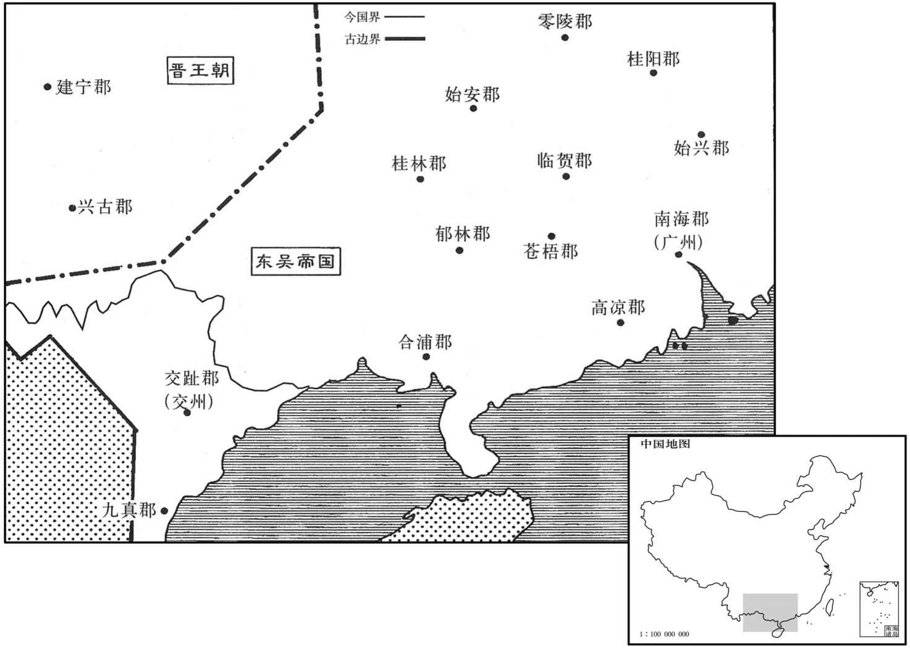

公元268年资治通鉴：本年记事、原文与白话对照
按原书编年位置阅读；追叙和史论不等于本年发生的事件。白话采用所据译本，缺译不以生成译文补齐。
卷79 · 本年记事
公元268年 · 晋世祖武皇帝泰始四年
四年〔（戊子、二六八）〕
本年事件索引（现代整理）

本年形势与背景参考图

本年形势与背景参考图
春，正月，丙戌，贾充等上所刊修律令。〔充等所刑修，就汉律九章增十一篇，合二十篇，六百二十条。其不入律者，悉以为令施行。凡律令合二千九百二十六条。上，时掌翻。〕帝亲自临讲，使尚书郎裴楷执读。〔考异曰：刑法志云：「泰始三年事毕，表上。」今从武纪。裴楷传云：「文帝时，诏楷于御前执读。」今从刑法志。〕楷，秀之从弟也。〔从，才用翻。〕侍中卢珽、〔珽，他鼎翻。〕中书侍郎范阳张华请抄新律死罪条目，〔抄，楚交翻，誊写也。〕悬之亭传以示民；从之。〔传，株恋翻。〕
春季，正月，丙戌（十八日），贾充待人奉上他们所修改的律令，晋武帝来到讲解之处，让尚书郎裴楷在一帝诵读。裴楷是裴秀的堂弟。侍中卢、中书侍郎范阳人张华，请求抄写新律令有关死罪的条目，在驿站张贴，以告示民众，晋武帝听从了这一建议。
又诏河南尹杜预奏：「古者黜陟，拟议于心，不泥于法；〔泥，乃计翻。〕末世不能纪远而守求密微，疑心而耳目，疑耳目而信简书，简书愈繁，官方愈伪。〔方，术也；言为官之方术也。〕魏氏考课，即京房之遗意，〔刘劭考课法，其略见七十三卷魏明景初元年。〕其文可谓至密；然失于苛细以违本体，故历代不能通也。岂若申唐尧之旧制，取大舍小，去密就简，俾之易从也！〔易，以豉翻；下难易同。〕夫曲尽物理，神而明之，存乎其人；去人而任法，则文伤理。莫若委任达官，各考所统，〔远官，显官也。居一官之长，其事得专达于上。〕岁第其人，言其优劣。如此六载，〔载，子亥翻，年也。〕主者总，集采按其言，六优者超擢，六劣者废免，〔六优，谓六载俱优。六劣，谓六载倎劣。〕优多劣少者平叙劣多优少者左迁。其间所对不钧，品有难易，主者固当淮量轻重，微加降杀，〔量，音良。杀，所戒翻。〕不足曲以法尽也。其有优劣徇情，不謟公论者，当委监司随而弹之。〔监，古衔翻。监司，御史、司隶，又诸州刺史也。弹，唐干翻，劾也，抨也。〕若令上下公相容过，此为清议大颓，虽有考课之法，亦无益也。」事竟不得。
晋武帝又命令河南尹杜预对官吏的进退升降进行考核，杜预上奏说：“古时候进退人才，筹划于心，不拘泥于不法规；到了衰亡之世，不能考虑长久的通行而专求细密、周到，心存疑忌就相信所见所闻，对所见所产生怀疑又相信文书、信札，文书、术札越来越繁琐，为官之道越来越虚伪。魏氏考核官吏的方法，正是汉代京房遗留的法则，其文辞条令可称为极欺细密，然而不足的是苛求细枝末节而违背了主体，所以历代都不能通行无阻。还不如申明唐尧时期的旧制度，取其大而舍其小，去其细密而从其简明，使之易于遵循。要想说透事物的常理，彰明精神实质，全在于人本身；抛开人而依赖法令，就会以文辞、条令损害事理。不如委任显贵的官员，各自考核其所统领范畴内的官吏，每年都进行考查，议论其优劣，这样连续六年，主管人综合六年的情况，审查对其六年的评议，六年成绩都是优良的人，可以超格选拔；六年成绩都是劣的，就要废黜免职。优多劣少的人平级调任，劣多优少的人就要降职。在这当中如有对答不平衡，品评有难有易，主管人自然应当准确地衡量轻重，稍加损益，不必曲折以求尽合于法。有对优劣的品评徇私情，不符合公正的议论的，应当交付监察部门进行劾察。假如使上下公然地容忍过错，那么这就使公正的评论彻底地衰败，即使有对官吏考核的法令，也不会有益处。”这件事到底也没有实行。
丁亥，帝耕籍田于洛水之北。
丁亥（十九日），晋武帝在洛水之北耕种奉祀宗庙的籍田。
戊子，大赦。
戊子（二十日），晋武帝大赦天下。
二月，吴主以左御史大夫丁固为司徒，右御史大夫孟仁为司空。〔吴录曰：孟仁本名宗，避暼字易焉。〕
二月，吴主任命左御史大夫丁固为司徒，右御史大夫孟仁为司空。
三月，戊子，皇太后王氏殂。帝居丧之制，一遵古礼。
三月，戊子（二十一日），皇太后王氏去世。晋武帝居丧期的制度，一概遵循古时倏的礼节。
夏，四月，戊戌，睢陵元公王祥卒，门无杂吊之宾。其族孙戎叹曰：「太保当正始之世，不在能言之流；及间与之言，理致清远，岂非以德掩其言乎！」〔正始所谓能言者，何平叔数人也。魏转而为晋，何益于世哉！王祥所以可尚者，孝于后母与不拜晋王耳，君子犹谓其任人柱石而倾人栋梁也。理致清远，言乎，德乎﹖清谈之祸，迄乎永嘉，流及江左，犹未已也。〕
夏季，四月戊戌（初二），睢陵元公王祥去世，家中去唁的宾客中没有缺乏德行之人。他的同族兄弟的孙子王戎叹道：“太保王祥在正始时期，没有被列于能言善谈的那一流里，有时候与他交谈，思想情趣清明广远，莫不是他的德掩盖了他言谈方面才能？”
己亥，葬文明皇后。有司又奏：「既虞，除衰服。」〔葬日虞遇柔日再虞，而三虞用刚日。三虞必反而行之。郑氏曰：虞，安神之祭也。骨肉归于土，魂气则无所不之，孝子为其彷徨，故三祭以安之。〕诏曰：「受终身之受而无数年庂报，情所不忍也。」有司固请，诏曰：「患在不能笃孝，勿以毁伤为忧。前代礼典，质文不同，何必限以近制，使达丧阙然乎！」〔达丧，犹通丧也。〕群臣请不已，乃许之；然犹素冠疏食以终三年，如文帝之丧。
已亥（初三），安葬文明皇后。主管部门上奏说：“安魂的祭礼已经完毕，可以除去丧服，”晋武帝下诏说：“受到母亲一生的爱抚，却没有用几年的时间回报，从感情上不忍心。”主管部门坚持请晋武帝除去丧服，晋武帝下诏说：“我所担忧的是不能够一心一意地尽孝，你们不要为我过度悲伤而忧虑。前代的礼仪典制形式内容也有所不同，何必要用近代的制度加以限制，使通用的丧礼废缺呢？”群臣仍然请求不已，晋武帝便听从了，但是仍然戴白冠，吃素食，坚持了三年，如同为晋文帝守丧一样。
秋，七月，众星西流如雨而陨。
秋季，七月，众多流星落向西方如雨水倾泻而下。
己卯，帝谒崇阳陵。
两版字句有差异，建议核对原文。
已卯（十四日），晋武帝拜谒崇阳陵。
九月，青、徐、兖、豫四州大水。〔青州统齐国、济南、乐安、城阳、东、莱，徐州统彭城、下邳、东海、琅邪、广陵、临淮，兖州统陈留、濮阳、济阴、高平、任城、东平、济北、泰山，豫州统颍川、汝南、襄城、汝阴、梁国、沛、谯、鲁、弋阳、安丰。晋志曰：青州取土居少阳其色青为名。徐州取舒缓之义。兖，端也，信也；又云：取兖水以名州。豫者，舒也言禀中和之气，性理安舒也。〕
九月，青、徐、兖、豫四州洪水泛滥。
大司马石苞久在淮南，威惠甚着。〔魏高贵乡公甘露三年，平诸葛诞，苞代镇淮南，至是凡十一年。〕淮北监军王琛恶之，〔监，古衔翻。恶，乌路翻。〕密表苞与吴人交通。会吴人将入寇，苞筑垒遏水以自固，帝疑之。羊祜深为帝言：「苞必不然。〔为，于伪翻。〕帝不信，乃下诏以苞不料贼势，筑垒遏水，劳优百姓，策免其官，〔考异曰：晋书武纪及苞传皆无苞免官年月，萧方等三十国春秋、杜延业晋春秋置在此，今从之。苞传又云：「敕琅邪王軎自下邳会寿春。」按武纪：軎明年二月乃镇下邳，恐传误。萧方等，梁元帝子也。〕遣义阳王望帅大军以征之。〔帅，读曰率。〕苞辟河内孙铄为掾，〔掾，俞绢翻。〕铄先与汝阴王骏善，骏时镇许昌，铄过见之。骏知台已遣军袭苞，私告之曰：「无与于祸！」〔与，读曰预。〕铄既出，驰诣寿春，劝苞放兵，步出都亭待罪；〔寿春都亭也。〕苞从之。帝闻之，意解，苞诣阙，以乐陵公还第。
大司马厂长包长期住在淮南，威望与恩惠在当地很有名。淮北监军王琛憎恨他，秘密地上报，说石苞与吴国相勾结。正巧吴国将要入侵晋，石苞构筑工事，阻断水流以使防卫更加坚固，晋武帝便对石苞产生了怀疑。羊祜深切地对晋武帝说：“石苞肯定不会如此。”晋武帝不相信，下命令以石苞没有料到敌方形势，构筑工事，阻断水流，使百姓劳累被惊扰为由，免去他的官职，派遣义阳王司马望率领大军征召石苞。当时，石苞征召河内孙铄为副官，孙铄从前就与汝阴王司马骏相友善。司马骏当时镇守许昌，孙铄路过那里去他，司马骏知道朝廷已经派出军队袭击石苞，就私下对孙铄说：“你不要卷入祸事里去。”孙铄从司马骏那里来，急驰到寿春，劝说石苞放下兵器、军队，步行走出驿站待罪，石苞听从了他的话。晋武帝听到这个消息，放下了心，石苞来到皇帝殿庭，以乐陵公的身份被遣回了他的住所。
吴主出东关；冬，十月，使其将施绩入江夏，万彧寇襄阳。〔夏，户雅翻。彧，于六翻。考异曰：晋帝纪作「郁」，今从吴志。〕诏义阳王望统中军步骑二万屯龙陂，〔龙陂，即摩陂更名，见七十二卷魏明帝青龙元年。〕为二方声援。会荆州刺史胡烈拒绩，破之，望吊兵还。
吴主出东关；冬季，十月，派他的将领施绩进入江夏，派万入侵襄阳。晋武帝命义阳王司马望统领中军步兵、骑兵二万人驻扎在龙陂，声援江夏与襄阳两方面。这时，荆州刺史胡烈抵御施绩的入侵并打败了施绩，司马望便领兵返回。
吴交州刺史刘俊、大都督修则、〔姓谱：元冥之佐有修氏。汉有屯骑校尉修炳。〕将军顾容前后三攻交趾，交趾太守杨稷皆拒破之；郁林、九真皆附于稷。稷遣将军毛炅董元攻合浦，战于古城，〔古城，盖合浦郡古城也。炅，古迥翻，又古惠翻。〕大破吴兵，杀刘俊、修则，余兵散还合浦。稷表炅为郁林太守，元为九真太守。
吴国交州刺史刘俊、大都督则、将军顾容前后三次攻打趾，都因交趾太守杨稷的抵抗而失败了。郁林、九真两地都归附于杨稷。杨稷派将军毛炅、董元攻打合浦，在古城交战，大破吴兵，杀死刘俊、则，剩下的散兵逃回了合浦。杨稷表奏毛炅为郁林太守，董元为九真太守。
十一月，吴丁奉、诸葛靓出芍陂，攻合肥；〔靓，疾正翻。芍，音鹊。〕安东将军汝阴王骏拒却之。
十一月，吴国丁奉、诸葛靓从芍陂出兵，攻打合肥，遭到安东将军、汝阴王司马骏的抵抗，吴兵退却。
以义阳王望为大司马，荀顗为太尉，〔顗，鱼岂翻。〕石苞为司徒。
晋武帝任命义阳王司马望为大司马，荀为太尉，石苞为司徒。